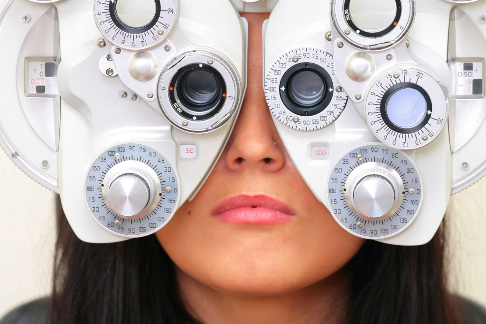

(Our services, in depth)
Everything your eyes need, under one roof.
From a routine eye exam and a new pair of glasses to advanced small-incision cataract surgery, every step is handled in our Pomona office by Dr. Dennis A. Chuck, M.D., an eye surgeon practicing since 1983. Here is a closer look at what that care involves.
Small-incision cataract surgery
A cataract is the gradual clouding of the eye's natural lens. It is one of the most common reasons vision fades with age, and one of the most treatable. The only proven remedy is to remove the clouded lens and replace it with a clear artificial lens, called an intraocular lens (IOL). At Clear Vision Eye Center, Dr. Chuck performs this with a modern small-incision technique that is gentle, quick, and remarkably precise.
Signs it may be time
Cataracts come on slowly, so many people adjust without realizing how much they have lost. Common signs include:
Vision that feels like looking through a dirty or foggy window
Colors that look dull, yellowed, or faded
Glare and halos around headlights, and trouble driving at night
New glasses that no longer seem to help for long
What the procedure is actually like
The surgery itself usually takes about fifteen minutes and is done as an outpatient, so you go home the same day. You stay awake but lightly relaxed with IV sedation, and the eye is numbed with drops, no needles. Through an incision smaller than three millimeters, Dr. Chuck softens the clouded lens with gentle ultrasound (phacoemulsification) and removes it, leaving the delicate natural membrane in place to hold the new lens. A soft, folded IOL is then slipped through that same tiny opening, where it unfolds into position. The incision is so small it typically seals itself without stitches.
Choosing your replacement lens
The IOL is permanent, and its power is calculated for your eye. Because it can also correct the focusing errors you have lived with for years, many patients leave far less dependent on glasses than before. Dr. Chuck will walk you through the options that genuinely fit your eyes and your life:
Monofocal
The standard, time-tested lens. It gives sharp vision at one distance, usually far, with reading glasses for up close. Covered by most plans, including Medicare.
Toric
A lens built to correct astigmatism at the same time, for people whose corneas are more oval than round. Sharper distance vision without as much reliance on glasses.
Multifocal & extended-depth
Premium lenses designed to provide a range of focus, near through far, so many patients can read, work, and drive with little or no eyewear.
Recovery, in plain terms
Most people feel little more than mild scratchiness afterward. You will wear a light protective shield for a day or two, especially while sleeping, and use prescribed drops to prevent infection and calm inflammation. Vision often begins to clear within a day and keeps sharpening over the following weeks. Most patients are back to normal activities within a few days, with a short list of common-sense precautions Dr. Chuck will review with you.
A note on cost
Medically necessary cataract surgery with a standard lens is covered by Medicare and most insurance plans. Premium lens options may carry an additional cost. Our front desk will check your specific coverage and explain any out-of-pocket amount before you decide, no surprises.
Comprehensive eye exams
A thorough eye exam does two jobs at once. It keeps your prescription current so the world stays crisp, and it acts as an early-warning system for conditions that show no symptoms until they have already done damage. Because Dr. Chuck is a surgeon as well as an examiner, anything he finds can be followed and treated in the same practice, by the same person, over time.

What a visit includes
A comprehensive exam is more than reading a chart. Depending on your needs, it may include:
Visual acuity & refraction
Measuring exactly how you see and dialing in the precise prescription for glasses or contacts.
Slit-lamp examination
A close look at the front of the eye, the cornea, iris, and lens, to spot cataracts and surface problems.
Eye-pressure check
Screening for the raised pressure that signals glaucoma, often before any vision is lost.
Dilated retinal exam
Widening the pupil to inspect the retina and optic nerve for diabetes, macular changes, and more.
What a routine exam can catch early
Many serious eye conditions are silent at first. A regular exam is often the first place they are found, while they are still easy to manage: glaucoma, diabetic changes in the retina, macular degeneration, cataracts, and the slow shifts in focus that come with age. For people with diabetes especially, a yearly dilated exam is one of the most valuable appointments on the calendar.
How often should you come in?
Healthy adults, no correction
Every 1–2 years
Glasses or contact lens wearers
Yearly
Diabetes, glaucoma, or family history
At least yearly
New blur, flashes, or floaters
Right away
Bring with you
Your current glasses or contacts, a list of medications, your insurance card, and any records from a previous eye doctor. If you are having a dilated exam, consider bringing sunglasses and, if you can, someone to drive you home, since your vision will be blurry and light-sensitive for a few hours.
Optical shop & eyewear
There is a real advantage to having your exam and your eyewear in the same place. The person who measured your eyes is right there as you choose your lenses, so nothing is lost in translation between a prescription and the glasses you walk out with. Our in-house optical shop fits glasses and contact lenses to match both your vision and the way you actually live.
Lenses, matched to your day
The frame is only half the story. The right lens makes the difference between glasses you tolerate and glasses you forget you are wearing.
Single vision
One clear focus for distance or reading, the everyday workhorse lens.
Progressives & bifocals
Near, intermediate, and far in a single lens, with no visible line on progressives.
Anti-reflective & blue-light
Cuts glare from screens and headlights for more comfortable work and night driving.
UV & light-adaptive
Full UV protection, plus photochromic lenses that darken in the sun and clear indoors.
Contact lens fittings
Contacts are not one-size-fits-all. A proper fitting measures the curve and size of your eye and accounts for dryness and how you plan to wear them, whether that is daily disposables, monthly lenses, or options for astigmatism and presbyopia. We will also make sure you are comfortable handling and caring for them before you leave.
One stop
Exam, prescription, and eyewear in a single visit.
Accurate by design
Your eyewear is built straight from the surgeon's own measurements.
Helpful staff
The same friendly team patients mention again and again.
Lens implants & glaucoma
Lens implants
Beyond cataract care, surgical lens implants can reduce or even eliminate a long-standing dependence on glasses and contacts. Dr. Chuck selects and places lenses tailored to correct nearsightedness, farsightedness, astigmatism, and presbyopia, matched to your vision goals.
Glaucoma management
Glaucoma quietly raises pressure inside the eye and can steal sight before you notice. With regular monitoring it can be caught early and managed, medically or with surgery when needed, to protect your vision for the long term.
We also provide ongoing care for astigmatism, presbyopia, and refractive errors. If you are not sure which applies to you, that is exactly what a comprehensive exam is for.
(One practice, every step)
Let's find the right care for your eyes.
Call our front desk or send a request, and we will help you book the visit that fits, whether that is an exam, new eyewear, or a cataract consultation.